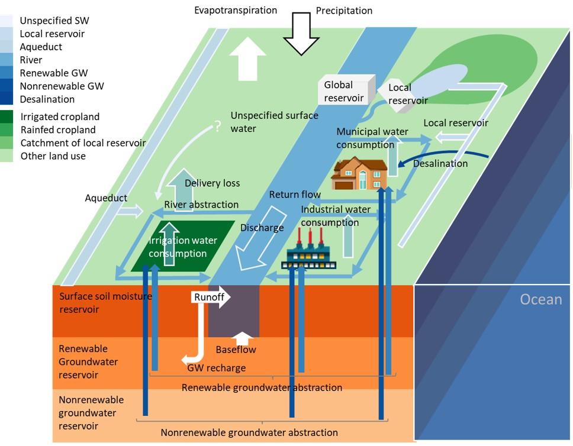

Introduction
About H08
- H08 is an open source global hydrological model, mainly developed by Dr. Naota Hanasaki at the National Institute for Environmental Studies, Japan. H08 has been used for a number of studies on the global hydrological cycle and water resources. These studies include (1) a quantitative estimation of the impact of reservoir operations on the terrestrial hydrological cycle, (2) an assessment of global water scarcity taking into account the seasonality of water use and river flows in the world, (3) a quantitative estimation of global virtual water trade (i.e. water virtually traded between nations accompanied by the import and export of crop and livestock products), and (4) an assessment of global water scarcity in the 21st century taking into account climatic and socio-economic change. See Publications for details.
- Source code of H08 are freely available on GitHub [From Dec 1 2023].

Schematic diagram of H08
About this web site
- This web site is prepared for the users of H08, hence the contents are quite technical.
- If you wish to use H08, please read the articles listed in Publications first, and grasp the concepts and characteristics of the model. Next, please download the "H08 Manual User's Edition" at Manuals, and understand the required computational resources. If you decide to use H08, please send an email to Dr. Naota Hanasaki [hanasaki at nies.go.jp]. You will be instructed on how to access the source code server and the global meteorological data server. Bugs and update information and technical comments are available at Bugs & Update and FAQ.